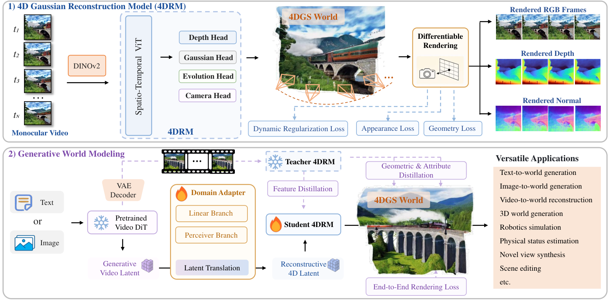

A film crew can shoot a scene beautifully, but you cannot walk around inside the footage. A set builder can build a walkable set, but it looks staged and nothing moves. AEON reads the director's notes before they become film and builds a moving set from them, so you get the real look and a place you can revisit.
촬영팀은 장면을 아름답게 찍지만, 그 필름 안을 걸어 다닐 수는 없다. 세트 제작자는 걸어 다닐 수 있는 세트를 짓지만, 어색하고 아무것도 움직이지 않는다. AEON은 필름이 되기 전의 감독 메모를 읽고 거기서 움직이는 세트를 짓는다. 그래서 사실적인 모습과 다시 찾아갈 수 있는 장소를 함께 얻는다.
How it works: reconstruct first, then translate latents작동 방식은 먼저 복원하고 잠재 표현을 옮기기
AEON never decodes frames to build the world: the video latent is mapped into the input space of a 4D reconstruction model.
AEON은 세계를 만들 때 프레임을 디코딩하지 않는다. 비디오 잠재 표현을 4D 복원 모델의 입력 공간으로 옮긴다.

- Reconstruct.복원.From video, four heads predict depth, Gaussian appearance, each Gaussian's timing and velocity, and camera poses, trained on videos with depth and normal labels.영상에서 네 개의 헤드가 깊이, 가우시안의 모양, 가우시안별 등장 시점과 속도, 카메라 자세를 예측한다. 깊이와 법선 라벨이 있는 영상으로 학습한다.
- Translate.변환.A linear branch plus a Perceiver bridge map the video latent into the reconstruction model's tokens; a student copies a frozen teacher's Gaussians, geometry and features.선형 가지와 Perceiver 다리가 비디오 잠재 표현을 복원 모델의 토큰으로 옮기고, 학생 모델은 고정된 교사의 가우시안, 기하, 특징을 따라 한다.
- Refine.다듬기.Fine-tune end to end through a differentiable rasterizer against frames decoded from the video latent.비디오 잠재 표현에서 디코딩한 프레임을 기준으로, 미분 가능한 래스터라이저를 거쳐 끝까지 미세 조정한다.
Key point: the adapter and the teacher do the work핵심은 어댑터와 교사가 일을 한다는 것
Replacing the adapter with a single Conv3D layer roughly halves DaVis PSNR, and dropping the teacher's distillation costs about 8 points.
어댑터를 Conv3D 층 하나로 바꾸면 DaVis PSNR이 약 절반으로 떨어지고, 교사 증류를 빼면 약 8점을 잃는다.
Results: better worlds from text, images and video결과는 텍스트, 이미지, 영상에서 더 나은 세계
Rendered along the same cameras, AEON's generated 4D worlds score higher aesthetics than per-frame baselines, on either Wan backbone without changes.
같은 카메라 경로로 렌더링하면, AEON이 만든 4D 세계는 프레임별 기준선보다 미적 점수가 높고, 두 Wan 백본 모두에서 구조를 바꾸지 않고 통한다.
Turning a real video into a 4D world, AEON beats dedicated reconstructors without needing poses or depth at inference.
실제 영상을 4D 세계로 바꿀 때도, AEON은 추론 시 카메라 자세나 깊이 없이 전용 복원 모델들을 앞선다.
| Method | Dycheck PSNR | DaVis PSNR | DaVis SSIM | DaVis LPIPS |
|---|---|---|---|---|
| 4DGT | 12.27 | 20.36 | 0.667 | 0.313 |
| MoVies | 11.84 | 20.74 | 0.688 | 0.307 |
| StreamSplat | 11.88 | 23.75 | 0.712 | 0.273 |
| NeoVerse | 14.27 | 23.93 | 0.735 | 0.283 |
| AEON | 14.49 | 24.66 | 0.771 | 0.243 |
| Teacher 4DRM | 14.41 | 24.89 | 0.775 | 0.241 |
If you want generated worlds an agent can revisit, translate the video model's latent into an explicit 4D scene instead of decoding frames. Persistent Gaussians give depth, motion and new camera views for free.에이전트가 다시 찾아갈 수 있는 세계를 만들고 싶다면, 프레임을 디코딩하지 말고 비디오 모델의 잠재 표현을 명시적인 4D 장면으로 옮기자. 지속되는 가우시안이 깊이와 움직임, 새로운 시점을 덤으로 준다.
World length is capped by the video model's clip length, and unseen regions leave holes. Real-time exploration is claimed without a measured speed, the generation test has only 30 scenes and two baselines, and the first stage needs depth and normal labels.세계의 길이는 비디오 모델의 클립 길이에 묶이고, 보이지 않은 영역은 구멍으로 남는다. 실시간 탐색을 주장하지만 속도를 재지 않았고, 생성 실험은 장면 30개와 기준선 두 개뿐이며, 첫 단계에는 깊이와 법선 라벨이 필요하다.